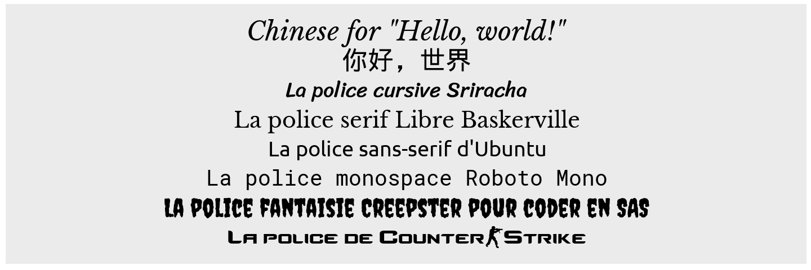
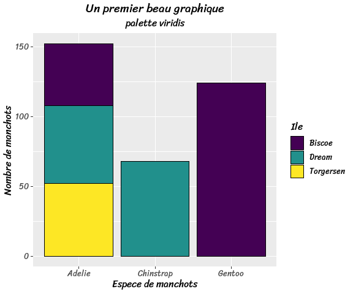
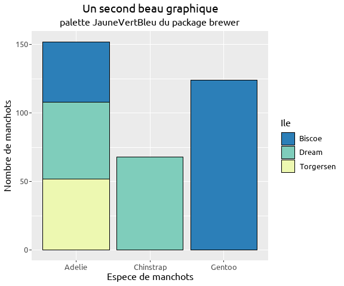

Introduction
Utilisation du package
On decrit ici la methode la plus simple pour utiliser des polices : activer le package dans l’integralite d’un document markdown pour des graphiques ggplot2.
Dans la vignette on trouve beaucoup plus de choses
- afficher correctement les polices dans l’interface graphique de Rstudio : on peut par exemple ouvrir un device R classique avec x11(), ou ouvrir un device pdf/png avec
pdf()oupng() - appliquer les polices a une partie d’un graphique R usuel avec
showtext_begin()etshowtext_end() - l’explication du fonctionnement du package, qui transfome le texte en image avant de produire la sortie html. Toute personne verra donc la meme page Web, quelles que soient les polices installees sur sa machine. Par contre les moteurs d’indexation ne pourront pas identifier ces phrases quand ils analyseront le contenu de la page.
Quelques grandes familles de polices
On reprend ici les categories classiques de police
- serif : lettres avec empattements = les petites “pattes” qu’on retrouve aux extremite des lettres, utilisees dans les ouvrages papier
- sans-serif : lettres sans empattements, considerees comme plus modernes et utilisees sur le Web
- cursive : lettres qui imitent l’ecriture manuscrite
- monospace : chaque lettre occupe le meme espace horizontal, cet aspect “robotique” convient bien a des extraits de code R, Python, SQL …
Choisir une police
On trouve de nombreux types de polices open source sur https://fonts.google.com/
On peut aussi chercher une police sur le Web (pr exemple https://www.dafont.com/fr/counter-strike.font), la telecharger et l’installer sur sa machine. Il faut ensuite executer la commande font_add(family = "<family_name>", regular = "/path/to/font/file"), ce qu’on a fait ci-dessous.
library("showtext")
library("ggplot2")
library("dplyr")
library(palmerpenguins, include.only = "penguins")
# pour centrer les titres des graphiques ggplot2
theme_update(plot.title = element_text(hjust = 0.5),
plot.subtitle = element_text(hjust = 0.5))
## Google fonts
# police serif
font_add_google("Libre Baskerville", "bask")
# police sans-serif
font_add_google("Ubuntu", "ubuntu")
# # police monospace
font_add_google("Roboto Mono", "robot")
# # police cursive
font_add_google("Sriracha", "sri")
# # police fantaisie
font_add_google("Creepster", "creepy")
## Police perso installee a la main sur la machine
# police Counter Strike
font_add(family = "Counter-Strike Moyen", regular = "/C:/Windows/Fonts/cs_regular.ttf")Application
a du simple texte
showtext_auto()
ggplot(NULL, aes(x = 1, y = 1)) + ylim(0.15, 0.95) +
theme(axis.title = element_blank(), axis.ticks = element_blank(),
axis.text = element_blank(), line = element_blank()) +
annotate("text", 1, 0.2, family = "Counter-Strike Moyen", size = 12,
label = "La police de Counter-Strike") +
annotate("text", 1, 0.3, family = "creepy", size = 12,
label = "La police fantaisie Creepster pour coder en SAS") +
annotate("text", 1, 0.4, family = "robot", size = 10,
label = "La police monospace Roboto Mono") +
annotate("text", 1, 0.5, family = "ubuntu", size = 10,
label = "La police sans-serif d'Ubuntu") +
annotate("text", 1, 0.6, family = "bask", size = 10,
label = "La police serif Libre Baskerville") +
annotate("text", 1, 0.7, family = "sri", size = 10,
label = "La police cursive Sriracha") +
# police japonais-chinois-coreen "wqy-microhei"
# incluse dans le package "showtext" realise par Yixuan Qiu ;-)
annotate("text", 1, 0.8, family = "wqy-microhei", size = 12,
label = "\u4F60\u597D\uFF0C\u4E16\u754C") +
annotate("text", 1, 0.9, family = "bask", size = 12, fontface = "italic",
label = 'Chinese for "Hello, world!"')
dans des graphiques
manchots = penguins %>% count(species, island)
ggplot(manchots, aes(x = species,y =n, fill = island)) + geom_col(col = "black") +
labs(title = "Un premier beau graphique", subtitle = "palette viridis",
x = "Espece de manchots", y = "Nombre de manchots", fill = "Ile") +
scale_fill_viridis_d() +
theme(text=element_text(size = 12, family = "sri"))
ggplot(manchots, aes(x = species,y =n, fill = island)) + geom_col(col = "black") +
labs(title = "Un second beau graphique", subtitle = "palette JauneVertBleu du package brewer",
x = "Espece de manchots", y = "Nombre de manchots", fill = "Ile") +
scale_fill_brewer(palette = "YlGnBu", direction = -1) +
theme(text=element_text(size = 12, family = "ubuntu"))